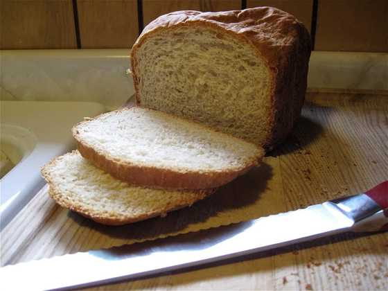
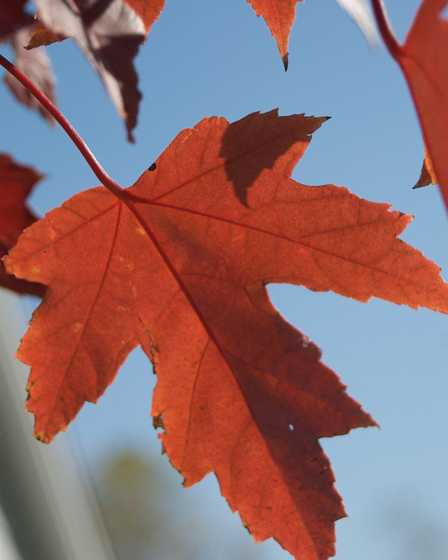

長崎県平戸市川内町
蒲鉾の町の隣に、
毎日手に取れるお菓子とパンを。
お菓子とパンの店 かきのきは、福岡のケーキ店で修業した店主が、実家の蒲鉾店の隣に開いたお店です。
お店の由来・想い
三代続く蒲鉾店の隣で。
地元テレビ局の紹介記事によると、店主の柿本大吾さんは福岡の有名ケーキ店で修業を積み、2024年2月に平戸市川内町でお店を開きました。実家は三代続く蒲鉾店で、お店はその隣にあります。
「まずは買いやすい値段を目指しています」と語られており、地元の方が気軽に立ち寄れる価格が特徴です。看板は、蒸し焼きにしたクリーミーな「かきのきプリン」。子どもから大人まで楽しめる味を目指したとされています。
情報源: NCC長崎文化放送「21市町いまコレ!」 / 食べログ(開業日) / Instagram
店名「かきのき」の意味は確認できていません。柿の木を思わせる配色は制作側のイメージです。




写真はフリー素材のイメージで、お店の実際の商品ではありません。
お菓子とパン
プリン、ケーキ、そしてパン。



営業時間・定休日・価格・メニュー詳細は変更されることがあるため「準備中」とし、最新情報はInstagramをご覧ください。
口コミ
こんな声が届きそうです
イメージ例
プリンがなめらかで、気づけば家族の分まで買っていました。
イメージ例
パンの値段が優しくて、朝ごはんに寄りやすいです。
イメージ例
ケーキも焼き菓子も種類があって、手土産選びが楽しくなります。
上記は制作側が作成したイメージ例であり、実在の口コミではありません。